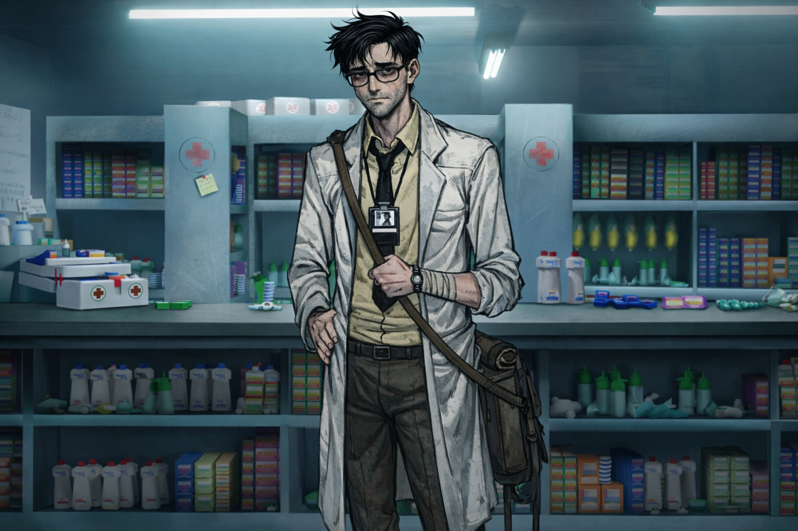

Foto do Agente

Informações
Benoar Laviolett é um pesquisador paranormal, ex-agente da CEA que foi reconhecido pela ordem e convocado por um periodo, trabalha buscando vincular ciência com o anômalo mas mesmo quando inviavel, buscando achar logica no outro lado, sendo responsavel por criar varios dispostivos hoje existentes que facilitam a vida inumeros agentes.
Desaparecimento
Seu desaparecimento consta desde 15/03/2025 e definitivamente foi rapitado, a pessoa em que levou Laviolett definitivamente sabe de sua função e de seu potêncial, podendo ser um risco contando com a contribuição do agente. Antes de ontem, dia 03/08/2025, sua filha Monalisa Dilua , Agente da Ordem, Desapareceu seguindo rastros do pai sem relatar. Entretanto a equipe de pesquisa rastreou a placa da van e todo o apatrecho tecnologico nela(boa parte da Ordem) que Dilua ultilizava e se mostrou que atualmente está na cidade de Lagoa Mansa - MG.